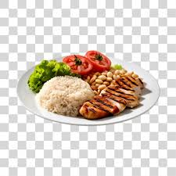

Prato Feito
- Arroz
- Feijão
- Bife
- Salada
Modo de preparo:
1 Em uma panela, em fogo médio aqueça o óleo e refogue a cebola até dourar. 2 Adicione o arroz e refogue por alguns minutos. 3 Acrescente a água e o sal. 4 Tampe parcialmente a panela e cozinhe em fogo médio por 10 a 15 minutos ou até o líquido secar e os grãos ficarem cozidos. 5 Desligue o fogo, tampe a panela e reserve por 5 minutos. Sirva em seguida.
Macarronada
- 1 colher (sopa) de óleo
- 300g de carne moída
- 1 pacote de macarrão tipo parafuso (500g)
- 1 pote de requeijão cremoso (200g)
- 2 xícaras (chá) de queijo provolone em cubos
Modo de preparo:
Leve uma panela de pressão ao fogo médio com o óleo e frite o bacon e a carne moída por 3 minutos. Adicione a cebola e o tomate e refogue por 2 minutos. Acrescente o molho de tomate, a água com o caldo dissolvido, o macarrão e sal. Tampe a panela e cozinhe por 3 minutos depois de iniciada a pressão. Desligue, deixe sair a pressão e abra a panela. Adicione o manjericão, o requeijão, o provolone e misture. Transfira para um refratário e sirva.
Strogonoff de frango
- 3 peitos de frango cortados em cubos
- 1/3 copo de mostarda
- 1 copo de creme de leite
Modo de preparo:
Em uma panela, misture o frango, o alho, a maionese, o sal e a pimenta. 2 Em uma frigideira grande, derreta a manteiga e doure a cebola. 3 Junte o frango temperado até que esteja dourado. 4 Adicione os cogumelos, o ketchup e a mostarda. 5 Incorpore o creme de leite e retire do fogo antes de ferver. 6 Sirva com arroz branco e batata palha.